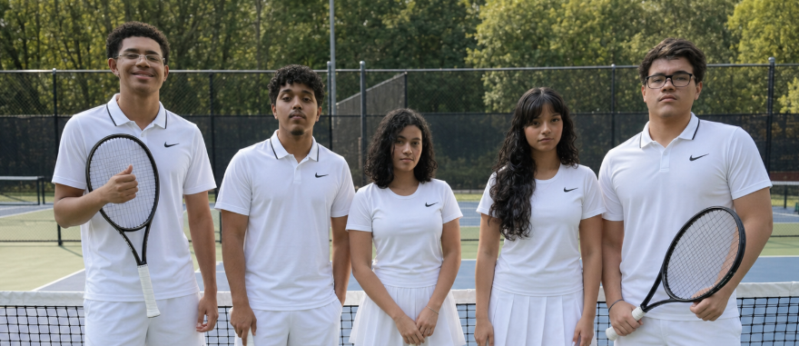

O acesso depende de redes, indicações e contatos pessoais.
Atletas têm dificuldade para localizar treinamentos, bolsas, avaliações, transporte, equipamentos e inscrições.
Uma apresentação digital sobre a pesquisa, as decisões e a arquitetura de uma plataforma criada para organizar o encontro entre talentos esportivos e oportunidades.
Atletas têm dificuldade para localizar treinamentos, bolsas, avaliações, transporte, equipamentos e inscrições.
O MatchPoint organiza descoberta, compatibilidade, candidatura, avaliação, seleção e registro do apoio.
O documento descreve 38 telas, regras de negócio, estados, conexões e casos prioritários.

Levantamento do problema, público e regras do sistema.
Organização das jornadas, telas e decisões de navegação.
Construção visual e técnica da solução.
Registro das decisões e preparação da entrega final.
Atletas, treinadores e instituições ainda dependem de redes sociais, indicações e contatos pessoais para encontrar e divulgar oportunidades.
O MatchPoint reúne perfis, oportunidades, candidaturas, avaliações e registros de apoio em um único fluxo.
Perfis confiáveis, oportunidades bem descritas e acompanhamento claro de cada candidatura.
Constrói o perfil esportivo, encontra oportunidades e acompanha candidaturas.
Administra as ações do atleta menor diretamente pela conta vinculada.
Publica oportunidades técnicas e registra avaliações solicitadas.
Oferece apoio, analisa candidatos, decide e registra o impacto.
Verifica cadastros, modera o sistema e audita regras e cálculos.
Delimitação do contexto e identificação das necessidades dos usuários.
Documentação de critérios, responsabilidades, estados e restrições.
Conexão das telas em jornadas completas para cada perfil.
Transformação das regras em telas e interações demonstráveis.
Revisão da coerência entre problema, solução, regras e experiência.
Organização do material final e demonstração das decisões do projeto.
Cadastro do atleta maior e do atleta menor com responsável obrigatório.
Home, oportunidades, Match Score, candidatura e acompanhamento.
Cadastro e jornada profissional do treinador.
Cadastro da instituição, criação de oportunidade e seleção.
Avaliação técnica e verificação administrativa.
O projeto estabelece uma base coerente para apresentar a proposta, validar os fluxos e orientar as próximas etapas de desenvolvimento.
Reunimos a pesquisa, os perfis, as regras, as telas e os fluxos que orientam a construção da proposta.
Ver PDF do TCC